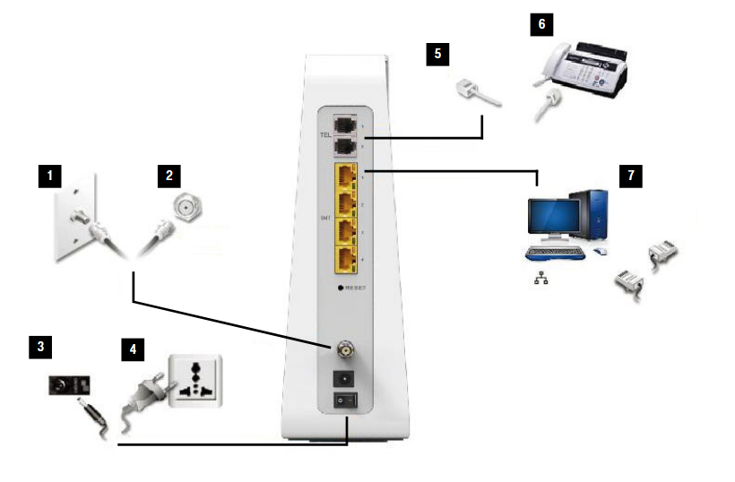

Um den Computer direkt mit dem Koaxial-Steckdose für LAN zu verbinden, muss das Kabel eine besondere Eigenschaft haben? (in meinem Fall bräuchte ich Koaxial auf USB-C oder zumindest Koaxial auf Ethernet) Braucht es zusätzlich einen speziellen Adapter oder ein spezielles Gerät, dass die Datenübertragung klappt? Vielen Dank, Robert
Ohne dem Magenta Modem geht es nicht.
Es gibt Ethernet über Coax aber dies niemals mit Magenta oder einem anderen Kabel Anbieter nutzen.
(Und auch da gibt es keinen direkten USB Adapter sondern nur auf Ethernet)
Vielen Dank!
Verstehe ich richtig?: um einen PC via LAN mit dem Internet zu verbinden, muss eine Ethernet-Kabelverbindung zwischen Modem (einer der 4 Steckplätze) und PC bestehen. Kann dann das Wlan im Modem deaktiviert werden? - Mein Wunsch ist, das gesundheitsschädliche WLan auszuschalten. Vielen Dank für die Unterstützung!
Ja, da muss eine LAN Verbindung zwischen PC und Modem sein.
WLAN lässt sich deaktivieren. Unter Umständen muss zuvor Wifree deaktiviert werden.
hoffentlich verständlich:
https://www.magenta.at/hardwaresupport/device/internet-fiber/box
Seite 9

Hausanschluss
|
|Coaxkabel
|
Coaxdose
|
|Coaxkabel (ca. 1m)
|
Magenta-Modem/Router (Connect Box)
|
| LAN-Kabel
|
Rechner
Kann ich nicht nur den Rechner sondern auch die Horizon Box via LAN-Kabel am Modem anschließen?
Nein, die Horizon Box muss per Coax angeschlossen werden.
(Die LAN Anschlüsse sind in Österreich nur Dekoration. In anderen Ländern haben diese eine Funktion)
d.h. Deine Antwort vom 2. Mai und das Schema von biznizläuft vom 2. Mai sind nicht mehr richtig? Lg, Robert
vor einer Stunde schrieb beranekr:d.h. Deine Antwort vom 2. Mai und das Schema von biznizläuft vom 2. Mai sind nicht mehr richtig? Lg, Robert
Nein, die haben noch genauso ihre Gültigkeit.
Modem != Horizon Box
Die Horizon Box ist der Kabel TV Receiver von Magenta und muss deswegen direkt mit dem Fernsehkabel verbunden werden.
Edit: Der PC muss aber mit dem Modem verbunden werden. Es gibt keine Verbindung zwischen Modem und TV Box.
Edit2: die Entertain Box 4K kann mit dem Modem auch verbunden werden, neben der Coax Verbindung. Das betrifft aber nicht die Horizon Box (TV HD Recoder) oder die TV HD Box DVR
Im Bild oben sieht man korrekt das Modem.
Quelle: https://www.magenta.at/hilfe-service/faq#!technische+anfrage/anleitungen/fernsehen/frage/21123
Das hier ist das TV Equipment. Ganz Links ist die Horizon Box angebildet
Bearbeitet von IT-Freak{kind=link}